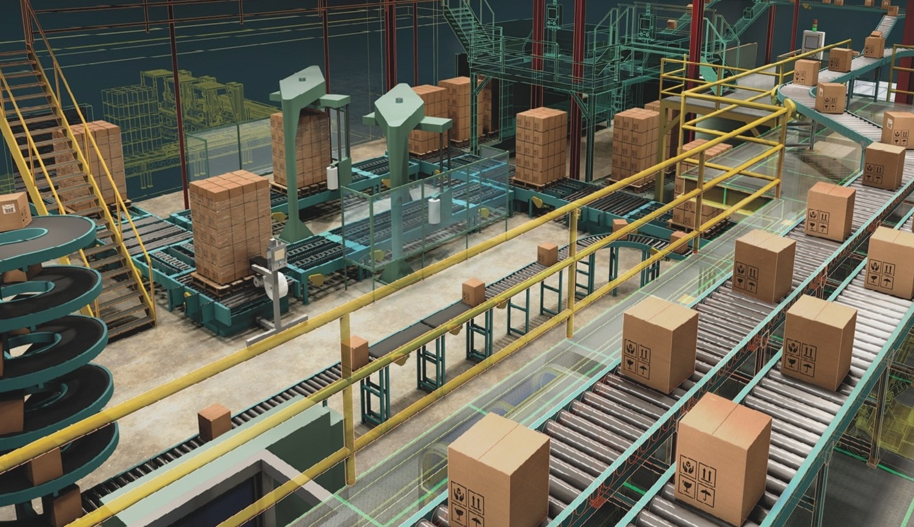

CALS технология

CALS технология
CALS - концепция, объединяющая принципы и технологии информационной поддержки жизненного цикла продукции на всех его стадиях, основанная на использовании интегрированной информационной среды (единого информационного пространства), обеспечивающая единообразные способы управления процессами и взаимодействия всех участников этого цикла (заказчиков продукции [включая государственные учреждения и ведомства], поставщиков [производителей] продукции, эксплуатационного и ремонтного персонала), реализованная в соответствии с требованиями системы международных стандартов, регламентирующих правила указанного взаимодействия преимущественно посредством электронного обмена данными.

За время своего существования и применения расшифровка аббревиатуры «CALS» претерпела ряд изменений. В момент возникновения идеи и в первоначальный период становления она расшифровывалась как Computer aided Logistic Support - компьютерная поддержка поставок и логистики. Акцент здесь делался на применении компьютеров для управления процессами поставок, транспортировки и эксплуатации (в аспекте обеспечения запчастями, расходными материалами и т. д.) продукции.
С течением времени, когда применение компьютеров перестало быть экзотикой, понятие трансформировалось и приобрело следующий вид: Continuous Acquisition and Life cycle Support - непрерывная информационная поддержка поставок и жизненного цикла. Здесь акцент смещен, во-первых, в сторону непрерывности взаимодействия заказчика и поставщика в ходе процессов поставки продукции, во-вторых, в сторону охвата всего ее ЖЦ. По умолчанию предполагается, что речь идет о сложной наукоемкой продукции, которая требует создания, преобразования и передачи между различными участниками ЖЦ больших объемов технической информации.
В последнее время появилась еще одна трактовка понятия «CALS»: Commerce At Light Speed - высокоскоростная коммерция (быстрая коммерция). Эта трактовка связана с постоянно расширяющейся сферой применения электронного бизнеса (e-business) или электронной коммерции (e-commerce), суть которых в том, что коммерческие сделки заключаются посредством глобальной сети интернет. В ходе этих сделок стороны обмениваются данными (подчас весьма значительного объема) в электронном безбумажном виде, при необходимости скрепляя эти данные электронными цифровыми подписями (ЭЦП), имеющими такой же юридический статус, как и собственноручная подпись. Электронный обмен данными происходит, естественно, с высокой скоростью, невозможной при традиционных способах общения партнеров.
Концептуальная модель CALS
Согласно этой схеме, основу, ядро ИПИ составляет ИИС или ЕИП. В принципе, оба термина равнозначны, однако в терминологическом словаре, утвержденном Госстандартом России, в качестве основного принят первый термин. На практике термин «ИИС» используют применительно к конкретному предприятию, а «ЕИП» - применительно к виртуальному предприятию (консорциуму).
Упомянутый словарь определяет ИИС как «совокупность распределенных баз данных, содержащих сведения об изделиях, производственной среде, ресурсах и процессах предприятия, обеспечивающую корректность, актуальность, сохранность и доступность данных тем субъектам производственно-хозяйственной деятельности, участвующим в осуществлении ЖЦ изделия, кому это необходимо и разрешено. Все сведения (данные) в ИИС хранятся в виде информационных объектов». В ИИС действует единая система правил представления, хранения информации и обмена ею.
В ИИС протекают информационные процессы, сопровождающие и поддерживающие ЖЦ изделия на всех его этапах. Здесь реализуется главный принцип ИПИ: информация, однажды возникшая на каком-либо этапе ЖЦ, сохраняется в ИИС и становится доступной всем участникам этого и других этапов (в соответствии с имеющимися у них правами пользования этой информацией). Это позволяет избежать дублирования, перекодировки и несанкционированных изменений данных, а также связанных с этими процедурами ошибок, и сократить затраты труда, времени и финансов.
Основное содержание ИПИ, принципиально отличающее эту концепцию от других, составляют инвариантные понятия, которые реализуются (полностью или частично) в течение ЖЦ изделия. Эти инвариантные понятия условно делятся на две группы:
• основные ИПИ-принципы;
• базовые ИПИ-технологии.
К числу первых относятся:
• анализ и реинжиниринг бизнес-процессов (Business-processes
analysis and reengineering);безбумажный обмен данными (Paperless data interchange) с использованием электронной цифровой подписи;
• параллельный инжиниринг (Concurrent Engineering);
• системная организация постпроизводственных процессов ЖЦ изделия - интегрированная логистическая поддержка, ИЛП (Integrated Logistic Support).
К числу вторых относятся:
• управление проектом (Project Management);
• управление данными об изделии (Product Data Management);
• управление конфигурацией изделия (Configuration Management);
• управление ИИС, в т. ч. информационными потоками (Information Management);
• управление качеством (Quality Management);
• управление потоками работ (Workflow Management);
• управление изменениями производственных и организационных структур (Change Management).
ИПИ-технологии реализуются силами многопрофильных рабочих групп, объединяющих в своем составе экспертов различных специальностей. Нормативную базу разработок составляют международные и национальные стандарты, регламентирующие различные аспекты ИПИ-технологий. В ИИС информация создается, преобразуется, хранится и передается от одного участника ЖЦ к другому при помощи программных средств, объединенных на схеме в блок «Инструментарий». К числу таких средств относятся:
• автоматизированные системы конструкторского и технологического проектирования (CAE/CAD/CAM);
• программные средства управления данными об изделии (PDM);
• автоматизированные системы планирования и управления производством и предприятием (MRP/ERP);
• программно-методические средства анализа логистический поддержки и ведения баз данных по результатам такого анализа (LSA/ LSAR);
• программные средства управления потоками работ (WFM);
• методология и программные средства моделирования и анализа бизнес-процессов (SADT).
Жизненный цикл продукции
Жизненный цикл (ЖЦ) продукции - это совокупность процессов, выполняемых от момента выявления потребностей общества в определенной продукции до момента удовлетворения этих потребностей и утилизации продукции.
К основным стадиям ЖЦ относятся: маркетинг; проектирование и разработка продукции; планирование и разработка процессов; закупки материалов и комплектующих; производство или предоставление услуг; упаковка и хранение; реализация; монтаж и ввод в эксплуатацию; техническая помощь и сервисное обслуживание; послепродажная деятельность или эксплуатация; утилизация и переработка в конце полезного срока службы.
Продукция представляет собой результат некоторой деятельности или выполненных процессов. Можно выделить четыре общие категории продукции:
• технические средства - отдельное изделие определенной формы;
• обработанные материалы — изделие, являющееся результатом преобразования сырья в желаемое состояние;
• услуги — итоги непосредственного взаимодействия поставщика и потребителя и внутренней деятельности поставщика по удовлетворению потребностей потребителя;
• программное обеспечение ЭВМ.
Т. к. в данном курсе рассматривается применение ИПИ-технологий преимущественно на предприятиях машиностроительного комплекса, т. е. в качестве продукции здесь выступает одна из вышеназванных категорий — технические средства, то схему жизненного цикла изделия можно представить в следующем виде.
Согласно приведенной схеме, которая более точно отражает процессы на машиностроительном предприятии, стадии ЖЦ включают: маркетинговые исследования; предэскизное, эскизное, техническое и рабочее проектирование; технологическую подготовку производства; изготовление; сборку; обучение заказчиков; передачу в эксплуатацию; обслуживание и модернизацию; утилизацию.

Критерии, определяющие принадлежность конкретной информационной системы к классу ИПИ-систем:
• обязательное наличие на предприятии ИИС;
• системная реализация инвариантных принципов и технологий ИПИ;
• применение прикладных, программных средств, изначально ориентированных на взаимодействие через ИИС;
• использование методов, правил и способов управления, изначально ориентированных на безбумажный обмен данными через ИИС;
• реализация принципов, технологий и процессов информационного взаимодействия в соответствии с требованиями международных и национальных стандартов (например, ISO 10303 и ГОСТ Р ИСО 10303).
Системы, не удовлетворяющие перечисленным критериям, не следует относить к классу ИПИ-систем. Такие системы обеспечивают лишь фрагментарную («лоскутную») автоматизацию со всеми присущими этой стратегии недостатками.
Цели внедрения CALS-технологий
Главная цель, которая преследуется предприятием при внедрении CALS — это минимизация затрат в ходе всего жизненного цикла изделия, повышение его качества и конкурентоспособности. А также повышение эффективности и конкурентоспособности самих промышленных предприятий. Достигается этот результат за счет существенного сокращения сроков освоения производства новых изделий, улучшения качества этих изделий и технической документации, представляемой в электронном виде, обеспечение высокого уровня сервиса и логистической поддержки на постпроизводственных стадиях жизненного цикла изделия или продукта. CALS-технологии являются мощным орудием, которое применяется на высокотехнологичных предприятиях для повышения эффективности работ, выполняемых в ходе жизненного цикла продукта. Повышение эффективности достигается благодаря интегрированности и преемственности информации. А также благодаря тому, что характеристики многих деталей создававшихся ранее изделий, описания систем, процессов, станков и оборудования, задействованных при его изготовлении, хранятся в унифицированном электронном виде и доступны любому пользователю независимо от его местонахождения.
Преимущества CALS
CALS-технологии базируются на наборе интегрированных информационных моделях изделия и его производственной и эксплуатационной среды. Более того, благодаря применению компьютерных сетей и стандартных форматов данных,CALS-технологии позволяют совместно использовать информацию и корректно её интерпретировать. CALS-технологии базируются на возможности совместного использования и обмена информацией во время процессов, выполняемых в ходе жизненного цикла продукта.
На базе CALS-технологий создаются виртуальные производства, в которых процесс создания спецификаций с информацией для станков с ЧПУ, достаточной для изготовления изделия, может быть распределен во времени и пространстве между многими независимыми пользователями и проектными студиями. Главными достижениями CALS-технологий являются лёгкость распространения передовых проектных решений и возможность многократного воспроизведения частей проекта в новых разработках.
Технологии, стандарты и программно-технические средства CALS позволяют быстро и дёшево обмениваться электронными данными и безбумажными электронными документами, а это даёт следующие преимущества:
Эти преимущества приводят к тому, что внедрение CALS-технологий способствует существенной экономии рабочего времени и других производственных ресурсов, требуемых для разработки того или иного изделия.
Компоненты CALS
Основными составляющими CALS-технологий являются:
Структура CALS
Для полноценной работы CALS-технологий требуется широкая программная поддержка. Все программные продукты, применяемые для функционированияCALS, можно разделить на две большие группы:
1. программы, необходимые для создания и преобразования информации об изделиях, производственной среде и производственных процессах, применение которых не зависит от реализации CALS-технологий;
2. программы, применение которых непосредственно связано с CALS-технологиями и требованиями соответствующих стандартов.
К первой группе относятся программные продукты, традиционно применяемые на предприятиях различных отраслей промышленности и предназначенные для автоматизации различных информационных и производственных процессов и процедур. К этой группе принадлежат следующие программные средства и системы:
Ко второй группе принадлежат программы:
Внедрение CALS
На мировом рынке уже сегодня, а скоро и в России продукция, не снабженная электронной документацией и не обладающая средствами интегрированной логистической поддержки постпроизводственных стадий жизненного цикла, будет полностью вытеснена. К любому высокотехнологичному изделию предъявляется ряд жёстких требований, удовлетворение которых невозможно без внедрения CALS-технологий. Среди этих требований можно выделить: